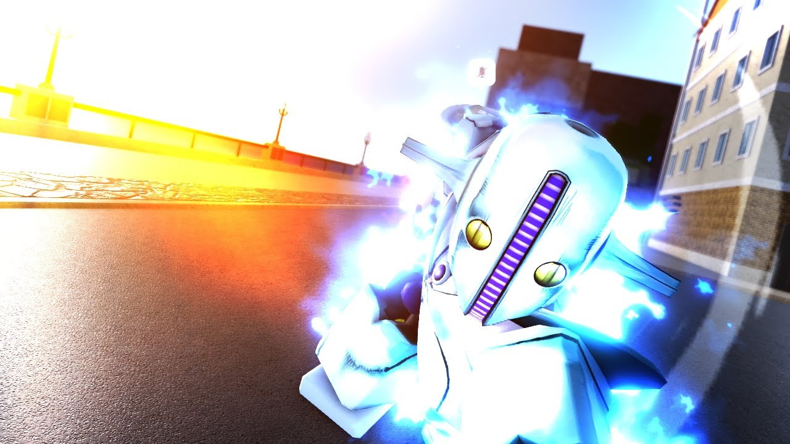
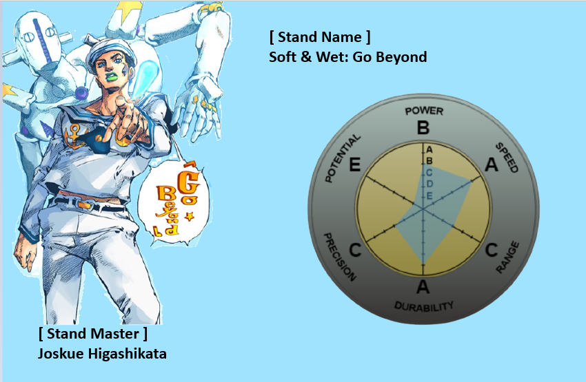

Este stand como en el manga permite la creación de burbujas funcionales inexistentes que van fuera de la realidad despues de fusionarse con el Stand de Kira Yoshikague de la Parte 8 Killer Queen este potencia sus habilidades, ademas de poder colocar bombas en cualquier lugar que desee el usuario, este stand esta en este top por el simple hecho que sus combos no pueden ser detenidos, hasta que el usuario se quede sin habilidades por usar


Combos, consejos y fallas
Soft & Wet es un semi-zoner con altas capacidades ofensivas, ya que Shovel Barrage es un movimiento de daño medio.
Sin embargo, Friction Beatdown y Friction Plunder pueden permitirte confirmar Go Beyond.
Friction Plunder se puede anular bloqueando, así que utilízalo solo si obtienes un bloqueo perfecto, un bloqueo perfecto o tomas a tu oponente con la guardia baja. Alternativamente, podrías tratar de engañar al enemigo haciendo Barrage rápidamente y luego spam Friction Plunder, ya que este movimiento tiene armadura, pero es poco probable que funcione contra mejores jugadores.
Bubble Prison aturde durante tanto tiempo que puede confirmar básicamente cualquier otro movimiento, incluso Friction Beatdown o Go Beyond. (Tenga en cuenta que cualquier daño infligido al oponente que INCLUYE daño por sangrado cancelará el aturdimiento).
Go Beyond es mejor con giro, ya que hace 47,5 de daño con Hamon y 51,7 de daño con Spin (sin tener en cuenta la resistencia al daño).
Bubble Generation cura una cantidad considerable, así que úsalo cuando tengas espacio para respirar o mientras tu oponente está en Bubble Prison. También es un buen contador contra Time Stop, ya que flotarás bastante alto en el aire mientras recuperas algo de salud.
Go Beyond se puede evitar corriendo a través de él en el momento correcto. La burbuja detonará, pero no se infligirá ningún daño.
Y - Bubble Prison Soft & Wet crea una burbuja, atrapando a la víctima dentro de ella, este movimiento inflige 30 de daño y explota después de un breve período de tiempo, la burbuja explota antes si la víctima sufre algún daño. Este movimiento se puede parar y romper bloques.
T - Shovel Barrage Soft & Wet agarra una pala y realiza 5 golpes rápidos, los 3 primeros golpes causan 5 daños, los 2 golpes finales causan 10 daños y el último golpe muñecos de trapo. El primer golpe se puede parar y los 2 últimos golpes se bloquean.
Z - Vision Plunder Soft & Wet lanza una burbuja al cursor, si aterriza, causa 30 de daño y ciega a la víctima temporalmente, la persiana simplemente hace que la pantalla se oscurezca extremadamente. Este movimiento se puede bloquear.
X - Moisture Plunder Después de un breve período de tiempo, Soft & Wet crea una barrera de burbujas frente a ti, si el oponente la atraviesa, recibirá un daño rápido de 1.3 y quedará aturdido. Este movimiento se puede bloquear y se puede usar como un extensor combinado. (1.7 completamente actualizado, 2.1 con Hamon)